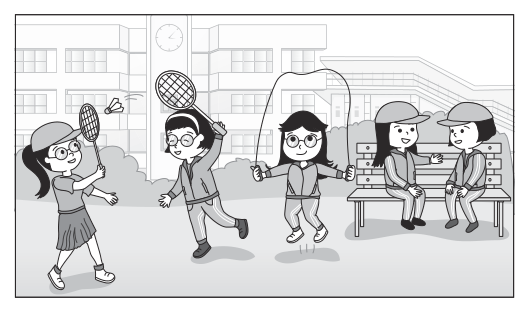

開卷有益 ／
國中教育會考 ／ 英語 ／ 115 年115 年國中教育會考英語試題與答案
這一頁是民國 115 年國中教育會考英語的整份歷屆試題，共 43 題，題目與標準答案出自心測中心 會考歷屆試題（依著作權法 §9，考試試題不受著作權保護），其中 43 題附有詳解。以下逐題列出題幹、選項與答案；要計時作答或記錄成績，請用線上練習。
線上作答這一科 →
全部 43 題
第 1 題
Look at the picture. All of the students who are exercising are wearing .

（A） caps（B） glasses（C） jackets（D） pants答案：（B）
詳解與考點 正解：all of the students who are exercising，必須找出每一位正在運動的學生共同配戴的物品。圖中運動中的學生都戴著 glasses，glasses 意為「眼鏡」，故選 B。
A：caps 意為「帽子」，不是每位運動中的學生都戴帽子。
C：jackets 意為「外套」，不是每位運動中的學生都穿外套。
D：pants 意為「褲子」，不是題圖中所有運動者共同可辨識的配戴物品。
本題考點：看圖選詞——all 要求選出所有目標人物都符合的特徵；先逐一核對運動中的每位學生，再排除只符合部分人物的物品。
第 2 題
Rita her dogs many times a day. That’s why they’re too fat.
（A） feeds（B） kisses（C） walks（D） washes答案：（A）
詳解與考點 正解：後句 That’s why they’re too fat 指出狗太胖的原因，空格應填能直接造成肥胖的動詞。feeds 表「餵食」，Rita feeds her dogs many times a day 即為每天多次餵狗，故 A 為正解。
B：kisses 表「親吻」，不會造成狗太胖，錯誤。
C：walks 表「遛」，它看起來可與 dogs 搭配，但遛狗通常增加活動量，與太胖的原因相反，錯誤。
D：washes 表「洗」，洗澡與體重無直接關係，錯誤。
本題考點：語境詞彙——由 too fat 回推原因，應選餵食的 feeds；動詞選填——除確認主詞與時態外，還要檢查前後因果是否合理。
第 3 題
You can ask Sophia anything about butterflies and bees. She has great of insects.
（A） chances（B） knowledge（C） news（D） power答案：（B）
詳解與考點 正解：題幹的 ask Sophia anything about butterflies and bees 說明 Sophia 很了解昆蟲，空格需填表示知識的名詞。B「knowledge」意為知識，have great knowledge of insects 表示對昆蟲很有知識，故 B 為正解。
A：chances 意為機會，have great chances of insects 不合語意與搭配，錯誤。
C：news 意為消息，不能表示一個人對昆蟲的了解程度，錯誤。
D：power 意為力量或權力；雖可接 of，但不表示昆蟲知識，錯誤。
本題考點：名詞語意與搭配——由「能回答某領域任何問題」判斷需填 knowledge；搭配判準——have knowledge of＋領域，表示「具有該領域的知識」。
第 4 題
Adam slept last night because he kept waking up from bad dreams.
（A） deeply（B） early（C） terribly（D） quickly答案：（C）
詳解與考點 正解：題幹的 kept waking up from bad dreams 表示 Adam 不斷被惡夢驚醒，因此睡得很糟。C「terribly」意為非常差地，修飾 slept 最符合語境，故 C 為正解。
A：deeply 意為熟睡地，與不斷驚醒矛盾，錯誤。
B：early 意為早地，說明時間早晚，不能說明睡眠品質，錯誤。
D：quickly 意為迅速地，不能表示睡得不好，錯誤。
本題考點：副詞語意——先由原因句判斷動作的狀態；語境判準——反覆醒來表示睡眠品質差，應選表示「糟糕地」的副詞。
第 5 題
Tara enjoys being with all kinds of animals; she even a snake as a pet.
（A） drops（B） gives（C） keeps（D） makes答案：（C）
詳解與考點 正解：題幹的 a snake as a pet 觸發「飼養某物當寵物」的固定用法。C「keeps」意為飼養，keep a snake as a pet 表示養一條蛇當寵物，故 C 為正解。
A：drops 意為掉落或放下，不能表示飼養寵物，錯誤。
B：gives 意為給予或送出；gives a snake 是把蛇給別人，不是養蛇，錯誤。
D：makes 意為製作，不能製作一條活蛇當寵物，錯誤。
本題考點：動詞慣用語——keep＋動物＋as a pet 表示「飼養動物當寵物」；語意判準——先看 as a pet 的身分，再選能表示長期飼養的動詞。
第 6 題
Little Eric chose the doll big brown eyes because it was the cutest in the store.
（A） at（B） in（C） on（D） with答案：（D）
詳解與考點 正解：題幹要描述玩偶具有大棕色眼睛，with 可表「具有某特徵」。the doll with big brown eyes＝「有大棕色眼睛的玩偶」，故 D 正確。
A：at 不用來連接物品與其具有的外觀特徵。
B：in 常可描述人穿著的衣物，例如 a man in a red hat，但不適合表示玩偶具有眼睛。它看起來對，是因為 in 也能引出外觀描述，然而此處要表物品本身的特徵。
C：on 表位置在表面上，不表示玩偶具有某種眼睛。
本題考點：介系詞搭配——with＋名詞可修飾人或物所具有的特徵；描述判準——物品的固定外觀特徵用 with，穿著衣物等情境才常用 in。
第 7 題
After four hours of mountain climbing, Rosa’s legs got , so she took a rest on the top of the mountain.
（A） dirty（B） sick（C） sore（D） strong答案：（C）
詳解與考點 正解：題幹的 After four hours of mountain climbing 與 took a rest 說明 Rosa 的腿因長時間爬山而酸痛。C「sore」意為痠痛的，最符合語境，故 C 為正解。
A：dirty 意為髒的，腿髒不必然需要在山頂休息，錯誤。
B：sick 意為生病的或噁心的。它看起來對，是因為人身體不適時也會休息；但題幹特指爬山後腿部肌肉的疲憊，應用 sore，錯誤。
D：strong 意為強壯的，與因腿部不適而休息的情況相反，錯誤。
本題考點：形容詞語意——依身體部位與活動判斷感受；搭配判準——sore legs 表示腿部痠痛，常用於運動或勞動後。
第 8 題
Having three cups of coffee a day can’t be bad for our health, ?
（A） can it（B） can they（C） is it（D） are they答案：（A）
詳解與考點 正解：題幹主詞是動名詞片語 Having three cups of coffee a day，整個片語視為單數，代名詞用 it；主句有否定助動詞 can't，附加問句要改用肯定的 can。A「can it」符合，故 A 為正解。
B：can they 的助動詞雖正確，但 they 把整個動名詞片語誤當成複數，錯誤。
C：is it 的代名詞正確，但附加問句應重複主句的助動詞 can，不可改用 is，錯誤。
D：are they 同時把主詞誤當複數，且助動詞也與主句不一致，錯誤。
本題考點：附加問句——附加問句須沿用主句的助動詞並採肯否相反；主詞判準——動名詞片語作主詞時視為單數，用 it，不因片語內有 cups 而改用 they。
第 9 題
You can’t push that door open with only one hand. It’s too heavy. You have to use !
（A） all（B） another（C） both（D） one答案：（C）
詳解與考點 正解：題幹以 only one hand 表示只用一隻手無法推開沉重的門，因此空格須表達兩隻手一起用。both 表「兩者都」，此處指兩隻手，故 C 為正解。
A：all 表全體，通常用於三者以上，不專指兩隻手，故錯誤。
B：another 表另一個，不能表達兩隻手同時使用；它看起來可接 hand，是因為 another 可修飾單數名詞，但語意不合，故錯誤。
D：one 表一個，仍只是一隻手，無法解決門太重的問題，故錯誤。
本題考點：代名詞語意——both 指兩者都；判準——前文出現 one hand、後文要求增加手的數量時，選能表示兩隻手的 both。
第 10 題
Alan works hard in his new job, and he wants to know his boss feels about him.
（A） how（B） that（C） whether（D） why答案：（A）
詳解與考點 正解：wants to know後面是間接問句，his boss feels about him問的是老闆「如何」看待他，how表「如何、怎樣」，故A為正解。
B：that可引導名詞子句，但不帶「如何」的疑問意義，錯誤。
C：whether表「是否」，適合二選一的疑問；本句問的是老闆對他的感受如何，不是問有無感受。它看起來對，是因為wants to know常可接whether，但語意不合，錯誤。
D：why表「為什麼」，詢問原因，不合本句詢問感受的方式或程度，錯誤。
本題考點：間接問句——know後可接疑問詞引導的名詞子句；疑問詞選擇——問感受或看法如何用how，問是否才用whether。
第 11 題
I thought the girl was Kate, but it was her sister, Candy. They sounded almost the same.
（A） answered the phone（B） she answered the phone（C） who answered the phone（D） and answered the phone答案：（C）
詳解與考點 正解：題幹要在 the girl 與 was Kate 之間補入修飾 the girl 的關係子句，且關係代名詞在子句中作主詞。C「who answered the phone」意為「接電話的那個女孩」，可直接修飾 the girl，故 C 為正解。
A：answered the phone 缺少關係代名詞，不能直接放在 the girl 後作關係子句，錯誤。
B：she answered the phone 是有主詞的完整子句，直接插入後會與 the girl 的結構衝突，錯誤。
D：and answered the phone 以連接詞 and 連接動作，沒有形成修飾 the girl 的關係子句，錯誤。
本題考點：關係子句——先行詞是人且在子句中作主詞時，可用 who；結構判準——名詞後若要補充其身分，需用關係代名詞引導修飾語，不可直接接完整子句。
第 12 題
Ken is going abroad with a woman he met online, though he doesn’t know well.
（A） her（B） each other（C） any（D） another答案：（A）
詳解與考點 正解：題幹的 a woman 是第三人稱單數女性，空格位於 know 後作受詞，因此要用受格代名詞。A「her」意為她，符合 he doesn’t know her well，故 A 為正解。
B：each other 意為彼此，需有兩方互相認識的語境，不能單指這位女子，錯誤。
C：any 意為任何，不能單獨作此處指人的受詞，錯誤。
D：another 意為另一個，未指回前面的那位女子，語意不合，錯誤。
本題考點：代名詞格位——動詞後作受詞時用受格；指代判準——單數女性先行詞 a woman 要以 her 指代，不可與主格 she 混淆。
第 13 題
Joe is happy he is not at the of the class now. His grades are better than half of his classmates’ this school year.
（A） side（B） front（C） center（D） bottom答案：（D）
詳解與考點 正解：題幹說 Joe 的成績現在比一半同學好，表示他不再是班上成績墊底的人；at the bottom of the class 是「班上成績墊底」的固定片語。D「bottom」符合，故 D 為正解。
A：side 意為旁邊，at the side of the class 不表示成績排名，錯誤。
B：front 意為前面，at the front of the class 可指位置前方，不是此處的成績墊底，錯誤。
C：center 意為中央，at the center of the class 不表示排名末段，錯誤。
本題考點：片語語意——at the bottom of the class 表示「班上成績墊底」；語境判準——成績超過許多同學，能用來對比過去不在末段。
第 14 題
Look! There is not a cloud in the sky. I think the chances of getting some rain today are really .
（A） far（B） good（C） possible（D） small答案：（D）
詳解與考點 正解：題幹說天空沒有一朵雲，推知今天下雨的機率很低；chances are small 是「機率很小」的自然搭配。D「small」符合，故 D 為正解。
A：far 意為遠的，不能用來形容 chances，錯誤。
B：good 意為好的；good chances 表示機率大，與無雲而難下雨的語境相反，錯誤。
C：possible 意為可能的，雖與可能性有關，但 chances are possible 不是此處自然的搭配，錯誤。
本題考點：搭配詞——chances are small 表示「機率很小」；語境判準——由天氣線索推論機率高低，再選與 chances 搭配自然的形容詞。
第 15 題
On windy days, the flowers in my garden like shy children with their heads down.
（A） bow（B） fall（C） rise（D） smell答案：（A）
詳解與考點 正解：題幹把風中的花比作低著頭的害羞孩子，空格要選表示低頭或鞠躬的動詞。A「bow」意為鞠躬、低頭，符合此一意象，故 A 為正解。
B：fall 意為倒下，花朵在風中低垂不等於整株倒下，錯誤。
C：rise 意為上升，與 heads down 的意象相反，錯誤。
D：smell 意為聞起來有氣味，不能表現花朵低頭的動作，錯誤。
本題考點：動詞語意——由比喻中的 heads down 判斷動作方向；意象判準——像害羞孩子低頭的花，應選 bow，不是 fall 或 rise。
第 16 題
Mr. Olson went to the doctor when he found he his hair. He hoped he would be able to keep his thick hair.
（A） was losing（B） is losing（C） will lose（D） has lost答案：（A）
詳解與考點 正解：題幹的 went 與 found 都是過去式，而他發現自己掉髮時，掉髮正持續發生，故要用過去進行式 was losing。was losing hair 表「正在掉頭髮」，最符合語境，A 為正解。
B：is losing 是現在進行式，與 went、found 所建立的過去時間不一致，錯誤。
C：will lose 是未來式，表示尚未發生的掉髮，與已經發現問題的情境不符，錯誤。
D：has lost hair 可表示「已經掉了頭髮」的結果，容易因語意相關而被選；但它是現在完成式，且強調截至現在的結果，題幹要描述的是 found 當時正在持續的掉髮過程，故錯誤。
本題考點：過去進行式——was/were+V-ing 表示過去某一時間正在進行的動作；當過去式 found 描述發現的瞬間，而另一動作當時仍在持續時，用過去進行式。
第 17 題
Do you know what Lindsey’s first job was? Before becoming a movie star, she the floors at the supermarket.
（A） mops（B） is mopping（C） has mopped（D） mopped答案：（D）
詳解與考點 正解：題幹的 Before becoming a movie star 把拖地這份工作放在成為電影明星之前，表示已結束的過去經歷，因此用簡單過去式。D「mopped」意為拖地，符合，故 D 為正解。
A：mops 是現在簡單式，表示現在習慣，與過去職業經歷不符，錯誤。
B：is mopping 是現在進行式，表示正在拖地，與成名以前的時間線不符，錯誤。
C：has mopped 是現在完成式，強調到現在為止的經驗；題幹已以 Before becoming a movie star 限定過去時段，應用過去式，錯誤。
本題考點：簡單過去式——描述已結束的過去工作或事件時用動詞過去式；時間線判準——before＋過去轉折所標示的先前經歷，不用現在式或現在完成式。
第 18 題
Our dog Lassie hides under the bed every time the moon comes out. She has been for years, but we don’t know why.
（A） it（B） like this（C） like us（D） that答案：（B）
詳解與考點 正解：題幹先說 Lassie 每逢月亮出現就躲到床下，後句的 has been 要補出「多年來一直是這個樣子」的狀態。B「like this」意為像這樣，代指前述躲在床下的習慣，故 B 為正解。
A：it 是代名詞，has been it 不可用來表示一直有某種行為模式，錯誤。
C：like us 意為像我們，前文沒有將狗與人比較的意思，錯誤。
D：that 雖可指代事物，但 has been that 的結構不自然，不能表達一直如此，錯誤。
本題考點：指示語——like this 用來指代前述的行為或狀態，表示「像這樣」；語意判準——先找 this 所回指的內容，本題是躲在床下的習慣。
第 19 題
Tom: Sam, could you help me in the kitchen now? Sam: No, I TV. It’s the most important game of the season.
（A） watch（B） watched（C） have watched（D） am watching答案：（D）
詳解與考點 正解：Sam 說現在不能幫忙，並補充「It’s the most important game of the season」，可知他說話當下正在看電視，應用現在進行式 am watching，意為「正在觀看」，D 為正解。
A：watch 為現在簡單式，通常表示習慣或一般事實，不能凸顯此刻正在看的動作，錯誤。
B：watched 為過去式，表示已在過去結束的觀看動作，與 now 不合，錯誤。
C：have watched 為現在完成式，強調已完成或延續至今的結果，不能表示此刻正在看比賽，錯誤。
本題考點：現在進行式——說話當下正在發生的動作，用 be 動詞＋V-ing；時間線索——now 與無法立刻幫忙的情境，常觸發現在進行式。
第 20 題
Amanda wants to make fruit tea by following The Best Fruit Tea You Can Make at Home. She has several kinds of fruit in the kitchen: apples, bananas, oranges, papayas, pears, and strawberries. Which are some of the fruits she can use to make the fruit tea?
（A） Oranges, papayas and pears.（B） Apples, bananas and oranges.（C） Apples, oranges and strawberries.（D） Bananas, papayas and strawberries.答案：（C）
詳解與考點 正解：食譜的 Note 寫「Most fruits are good for making fruit tea, but not papayas or bananas.」——木瓜與香蕉不可用。Amanda 手上有 apples、bananas、oranges、papayas、pears、strawberries，扣掉香蕉與木瓜後可用的是蘋果、柳橙、梨子、草莓；C 的三種全在可用範圍，故選 C。
A：含 papayas，被 Note 明文排除。
B：含 bananas，被 Note 明文排除。
D：同時含 bananas 與 papayas，兩種都被排除。
本題考點：排除型清單比對——食譜列出的材料是「建議」而非唯一清單，真正的關鍵是 Note 的否定句；作答時先把禁用項圈出，再逐一刪去含禁用項的選項，比正面核對更快且不易漏。
第 21 題
According to the reading, which is correct when we make the fruit tea?
（A） Boiling water with sugar in it.（B） Making sure to take out the fruit.（C） Putting in the fruit and the lemon juice at the same time.（D） Leaving the teabags in the pot of hot water for 2 to 3 minutes.答案：（D）
詳解與考點 正解：食譜步驟 2 寫「Put the teabags into the pot of hot water for 2 to 3 minutes and take them out.」——茶包在熱水中浸泡 2 至 3 分鐘後取出，與 D 所述一致，故選 D。
A：糖在步驟 5 才與檸檬汁一起加入並攪拌，步驟 1 只煮水，並非把糖和水一起煮沸。
B：步驟 4 括號明寫「Leave the fruit in the pot to make the tea taste better.」，水果要留在壺裡，不是取出。
C：水果在步驟 4 放入，檸檬汁在步驟 5 才加，兩者並非同時放入。
本題考點：步驟順序題的逐項對位——把選項所述動作各自定位到食譜的第幾步，再比對該步的時機與附註；括號內的補充說明（Leave the fruit…）常是誘答的正解依據，不可略讀。
In 6th grade, I tried to get the students I totally bombed it. to pick me as student leader. I’ll make class hours shorter. And we’ll have only three days of school a week… What? That’s not what a student leader can decide. He doesn’t I was the best choice, know anything. but why didn’t people know that? I became a salesperson when I was 23, I bombed it again. and I believed I could be Number 1. You said you would Hawkins, we don’t need sell 50 cars a month. your service anymore. Don’t worry. But you sold only 1 Go pack your things… I’ll sell 149 cars car in two months. next month. Why ? You said that a year ago.
第 22 題
According to the comics, what kind of person is Hawkins?
（A） He sees good things in people.（B） He never goes to work on time.（C） He blindly follows other people.（D） He talks about things he can’t do.答案：（D）
詳解與考點 正解：Hawkins 競選時承諾縮短上課、每週只上學 3 天，推銷員時又誇口每月賣 50 輛車，卻 2 個月只賣 1 輛，還說下月可賣 149 輛。D 的 He talks about things he can’t do 表「他說些自己做不到的事」，符合漫畫，故 D 為正解。
A：漫畫沒有表現他善於看見別人的優點。
B：漫畫沒有提到他上班遲到。
C：他是自行誇口，不是盲目跟隨別人。
本題考點：人物性格判斷——把人物多次說的話與實際結果對照；承諾遠超職權或業績時，可推知他愛誇口而缺乏實踐能力。
第 23 題
What does it mean when we say someone bombed something?
（A） They gave it up.（B） They failed at it.（C） They were fine with it.（D） They were careful about it.答案：（B）
詳解與考點 正解：bomb 在口語中可表示「徹底失敗」。題組情境中人物競選班長落選、當業務業績慘澹而被解僱，都能印證 bombed it 是「在某事上失敗」，B 為正解。
A：gave it up 意為「放棄它」，不是 bombed something 的意思，錯誤。
C：were fine with it 意為「對此覺得可以、沒問題」，與失敗語意相反，錯誤。
D：were careful about it 意為「對此很小心」，不表示結果失敗，錯誤。
本題考點：語境猜詞——先由落選、業績慘澹、被解僱等結果推回詞義；口語用法——bomb something 表示某事做得很糟或徹底失敗。
This is a brochure for the Marigolds’ Home. The Marigolds’ Home Opening times: March to October 10:00-17:00 November to February 10:00-16:00 Closed on Mondays To make sure you enjoy your visit to The Marigolds’ Home, we’d like to ask you to follow the rules below: 1. Pets are not allowed in any areas of the Marigolds’ Home. 2. Eating and drinking are not allowed inside the buildings, except in the café. 3. Picture-taking is not allowed inside Sir Archie’s House. 4. Please take off your shoes before entering the Rabbit’s Temple. Become a member and save 10% on tickets and 30% on all items in the gift shops. To join, visit www.themarigoldshome.com.
第 24 題
Which question can the brochure answer?
（A） Can I order tickets online?（B） How much are the tickets?（C） How can I get to the Marigolds’ Home?（D） When can I visit the Marigolds’ Home?答案：（D）
詳解與考點 正解：手冊直接列出 March to October 10:00-17:00、November to February 10:00-16:00，並註明 Closed on Mondays。D 的 When can I visit the Marigolds’ Home 可由這些開放時間回答，故 D 為正解。
A：手冊只有加入會員的網站，沒有說能否線上訂票。
B：手冊沒有列出門票價格。
C：手冊沒有交通路線或到達方式。
本題考點：資訊檢索——題目問哪一項能由手冊回答，就找是否有直接對應的欄位；opening times 與 closed on Mondays 可回答參觀時間，不能推成票價或交通資訊。
第 25 題
What breaks the rules for visitors to the Marigolds’ Home?
（A） Eating burgers in the Rose Garden.（B） Taking pictures in the Main House.（C） Entering the Rabbit’s Temple without shoes.（D） Taking pet dogs for a walk on the playground.答案：（D）
詳解與考點 正解：規則 1 明定 Pets are not allowed in any areas of the Marigolds’ Home，任何區域都不得帶寵物。D 的 Taking pet dogs for a walk on the playground 即使在戶外遊樂場仍屬帶寵物進入，故違規並為正解。
A：禁止飲食的是建築物內，Rose Garden 為戶外花園，在其中吃漢堡不違反所列規則。
B：禁止拍照只限 Sir Archie’s House，Main House 不在此限，錯誤。
C：進入 Rabbit’s Temple 前要脫鞋，without shoes 正是遵守規則，錯誤。
本題考點：規則對照——注意規則的範圍與例外；any areas 表所有區域，inside the buildings 限建築物內，except in the café 與特定建築名稱都是判斷關鍵。
第 26 題
After shopping at the gift shop of the Main House, Lizzy walks out and sees the Family Library in front of her. She wants to visit the Rose Garden. How can she get there?
（A） Turn left and walk past the Main House, then go straight and turn right at the corner.（B） Turn left and walk past Sir Archie’s House, then turn right and walk past the Main House.（C） Turn right and go straight to the Farmyard, then turn right and go straight, then turn left at the corner.（D） Turn right and walk through the Butterfly Garden, then walk past the Rabbit’s Temple and the café.答案：（C）
詳解與考點 正解：題幹給定起點是主屋禮品店外、面向家庭圖書館，須依園區平面圖的相對位置逐段追蹤路線。C 先右轉直走至農場，再右轉直走，最後在轉角左轉，即可由指定起點到達玫瑰園，故 C 為正解。
A：先左轉經過主屋再於轉角右轉，路線未依圖中玫瑰園所在方向前進，錯誤。
B：左轉經過 Sir Archie’s House 後再右轉經過主屋，會回到主屋周邊，不能到達玫瑰園，錯誤。
D：右轉穿過蝴蝶花園，再經過兔子廟與咖啡館，所經設施不在通往玫瑰園的正確路徑上，錯誤。
本題考點：地圖與方位判讀——先固定起點的面向，再依每個轉彎與地標逐步追蹤；路線題判準——每一步都要能與平面圖上的相對位置銜接，不可只挑看似熟悉的地標。
One summer evening when English cello player Beatrice Harrison was practicing in her garden, she was joined by a visitor she did not expect. The visitor was a nightingale. The small brown bird sang together with Harrison’s cello music, and the birdsong sounded like the piece she was playing. For the next few evenings, her visitor kept coming back, sometimes with several of its friends. Harrison decided that more people should hear the little singers. Photo: Ms. Harrison with the cello So, on May 19, 1924, Harrison worked with the BBC, the UK’s national TV and radio station, and played in her garden. At first, the artist was playing alone. Fifteen minutes before the end of her playing, the nightingales began to sing with the cello. The nightingale show was popular with radio listeners. It was repeated the next week, and for the next twelve years Harrison played on the radio with her garden friends. During this time, she got 50,000 fan letters. People called her “the Nightingale Lady.”
第 27 題
Why was Beatrice Harrison called the Nightingale Lady?
（A） She wrote songs about nightingales.（B） She sang as beautifully as a nightingale did.（C） She taught nightingales to sing in a radio show.（D） She was famous for playing music with nightingales.答案：（D）
詳解與考點 正解：文末的「for the next twelve years Harrison played on the radio with her garden friends」，其中 garden friends 指夜鶯。Harrison 因長年在廣播中與夜鶯合奏而聞名，故 D「她以和夜鶯一起演奏音樂聞名」為正解；play music with 表「與……一起演奏音樂」。
A：文中沒有說她創作關於夜鶯的歌曲，錯誤。
B：她演奏的是大提琴，文中未說她唱歌像夜鶯一樣優美，錯誤。
C：夜鶯是自行隨大提琴鳴唱，文中沒有她訓練夜鶯在廣播節目唱歌，錯誤。
本題考點：閱讀細節推論——將稱號回扣文中的成名事蹟；英文同義指涉——garden friends 在文中指夜鶯，須結合前後文判讀。
第 28 題
Which is NOT used in the reading to mean the nightingale(s) ?
（A） Her visitor.（B） The little singers.（C） The artist.（D） Her garden friends.答案：（C）
詳解與考點 正解：NOT used to mean the nightingale(s)，要找「不」指夜鶯的稱呼。C 的 the artist 指的是演奏大提琴的 Beatrice Harrison，而非夜鶯，故 C 為正解；artist 表「藝術家、表演者」。
A：her visitor 是最初到花園與 Harrison 合奏的夜鶯，指夜鶯。
B：the little singers 指發出歌聲的夜鶯，指夜鶯。
D：her garden friends 指與她在花園及廣播中合作的夜鶯，指夜鶯。
本題考點：代名詞與同義替換——先找出各稱呼所在句的先行詞；否定問句判準——題目問 NOT 時，要選出唯一不符合指涉對象者。
With heavy hearts, we are here to say goodbye to Rose Lacey, a wonderful writer who will be sadly missed. Rose and I first met in 2010. I was at a party to pick up my wife when I heard Rose explaining to her and her friends why Get Across was a great movie. Her ideas were so interesting that I invited her to write some articles about movies for Action! US. Rose was very excited and agreed right away. Over the next ten years, Rose wrote more than 150 articles. Rose could always bring out something new from movies that we thought we knew so well. People often told me that Rose never failed to surprise them. Her articles often made them think whether they actually saw the same movie, but if they went to see it again, they experienced the movie in a whole new way. In her short life of 40 years, Rose has made her mark on the world of movies with her articles for Action! US. We are lucky to have had her in our lives. She was a very special person. Alex Jackson Head of Action! US
第 29 題
Why does Alex Jackson write about Rose Lacey?
（A） Because she died.（B） Because she is very sick.（C） Because she is moving away.（D） Because she is leaving for another job.答案：（A）
詳解與考點 正解：題幹開頭的 With heavy hearts、say goodbye 與 will be sadly missed 都是哀悼語氣，且文中回顧 Rose 短暫的 40 年人生，表示她已去世。A「Because she died」符合，故 A 為正解。
B：文章沒有說 Rose 生病，錯誤。
C：文章沒有說 Rose 搬家，錯誤。
D：文章沒有說 Rose 換工作；say goodbye 看起來可能像離職告別，但全文是追悼她的一生，錯誤。
本題考點：文章主旨與撰文目的——由開頭的情緒詞與全文內容判斷寫作情境；語境判準——追悼文會回顧人生與貢獻，不可只按 goodbye 推成離職或搬遷。
第 30 題
How did Rose Lacey and Alex Jackson get to know each other?
（A） They met at a party.（B） They were relatives.（C） They worked in the same office.（D） They took a course on movies together.答案：（A）
詳解與考點 正解：題幹問兩人如何認識，文章直接說 Rose and I first met in 2010，當時 Alex 在一場 party 接妻子，因此兩人是在聚會相遇。A「They met at a party」符合原文，故 A 為正解。
B：文章沒有提到兩人是親戚，錯誤。
C：Alex 後來邀 Rose 為雜誌寫文章，並非原先在同一辦公室工作，錯誤。
D：文章提到 Rose 談論電影，沒有說兩人一起上電影課，錯誤。
本題考點：閱讀細節理解——先定位題目問的認識經過，再找 first met 附近的資訊；證據判準——選項須能由原文直接支持，不可把後來的合作關係推成初識情境。
第 31 題
What is special about Rose Lacey’s articles?
（A） They are important to movie makers.（B） They talk about movies from a fresh angle.（C） They give interesting information about actors.（D） They are good examples of how to write stories.答案：（B）
詳解與考點 正解：題幹問 Rose 文章的特色，原文說她能從熟悉的電影帶出新事物，讀者重看後會以全新的方式體驗電影。B「They talk about movies from a fresh angle」意為文章以新鮮角度談電影，符合，故 B 為正解。
A：文章未說她的文章對電影製作者很重要，錯誤。
C：文章未說她主要提供演員的有趣資訊，錯誤。
D：文章是電影評論，不是教人寫故事的範例，錯誤。
本題考點：閱讀推論——把原文的描述轉換成選項的概括說法；證據判準——「以全新方式體驗電影」可推知評論角度新穎，不能延伸為對製作者、演員或故事寫作的內容。
SEA GLASS: GLASS BOTTLES’ SECOND LIFE Sea glass is made from the magic of the sea. It usually comes from glass bottles that are thrown into the water. Each piece of sea glass looks different, and sea glass is often seen on art pieces. The pictures below explain how sea glass is born. Glass bottles are thrown as garbage 1 into the sea. When these bottles ride the waves of the sea, they hit each other or other 2 garbage in the sea and break into small pieces of glass. Pieces of glass are pushed by sea water and move along the sea floor. The 3 sharp pieces slowly become rounder and rounder. After tens or hundreds of years in the sea, the pieces of glass grow an ice-like 4 white color on the outside and become sea glass. Sea glass is finally pushed up to the 5 beach. Artists collect pieces of sea glass and 6 put them into their works. However, people now seldom use glass to make bottles and bowls—paper bowls and cups have become more popular these days. This means there are fewer glass items in the sea, so less and less sea glass will be found in the future.
第 32 題
Why does the title say “Glass Bottles’ Second Life” ?
（A） People collect sea glass and use it to make new glass bottles.（B） People collect sea glass at the beach and use it to make wishes.（C） Glass bottles that are thrown into the sea become the homes of sea animals.（D） Glass bottles that are thrown into the sea become sea glass which is used in art pieces.答案：（D）
詳解與考點 正解：標題的 Second Life 指玻璃瓶被丟入海中後，經海水與砂石磨蝕成 sea glass，又被用來製作藝術作品，獲得新的用途；D 為正解。sea glass 意為「海玻璃」，指被海水磨蝕後表面圓滑的玻璃碎片。
A：文章說海玻璃被用於藝術作品，沒有說人們蒐集海玻璃製作新的玻璃瓶，錯誤。
B：文章沒有提到用海玻璃許願，錯誤。
C：玻璃瓶成為海洋動物住處不是本文所說的第二生命，錯誤。
本題考點：標題寓意——以文章主要事件解釋比喻性標題；細節判讀——玻璃瓶變成海玻璃後被用於藝術作品，才是其「第二生命」。
第 33 題
According to the reading, how is sea glass made?
（A） Sea glass becomes rounder after it is pushed up to the beach.（B） Colder sea water helps pieces of glass become sea glass faster.（C） Pieces of glass become white on the outside after many years in the sea.（D） Glass bottles break into pieces when they are dug out from the sea floor.答案：（C）
詳解與考點 正解：題幹問 sea glass 的形成過程，關鍵句是玻璃碎片在海中經過數十或數百年後，表面會長出冰狀白色。C 的 Pieces of glass become white on the outside after many years in the sea 與本文第 4 步相符，故 C 為正解。
A：玻璃碎片是在海水推動、海底磨蝕時逐漸變圓，不是在被推上沙灘後才變圓，故錯誤。
B：文章未提到較冷海水會加速形成，故錯誤。
D：玻璃瓶是在海中碰撞其他垃圾時破裂，不是從海底挖出時破裂，故錯誤。
本題考點：製程細節——依時間順序對照文章步驟；判準——確認選項的地點、原因與先後順序都與原文一致。
第 34 題
According to the reading, why will less sea glass be found in the future?
（A） People do not make as many glass items as before.（B） People have learned not to throw garbage into the sea.（C） Artists are using too much sea glass in their art pieces.（D） Waves are not big enough to push sea glass up to the beach.答案：（A）
詳解與考點 正解：文末的因果關係：現在較少用玻璃製作瓶子和碗，紙碗、紙杯更普遍，因此海中的玻璃物品變少。A「人們不像以前製作那麼多玻璃物品」正是未來海玻璃減少的原因，故 A 為正解。
B：文中未說人們已學會不把垃圾丟入海中，錯誤。
C：藝術家蒐集海玻璃做作品，但文中未說其使用量造成海玻璃減少，錯誤。它看起來對，是因為藝術家確實會蒐集海玻璃，但這不是文末指出的成因。
D：文中未說海浪變小，也沒有以海浪無法把海玻璃推上沙灘解釋，錯誤。
本題考點：因果推論——答案須能對應文中明示的原因與結果；閱讀判準——區分文章提及的背景事實與真正用來解釋結果的原因。
Scandinavian News The Future of Icelandic by Anna Adams Icelandic is a language that is spoken only in Iceland. It has a long history. But many Icelanders are worried that they’re losing Icelandic. The reason for their worry is the prevalence of English in Iceland. “I use English when I talk to my housework robot, use my phone, and watch movies,” said Helgi Atlason, an engineer. There is a reason for that. Most of these products use English, and few companies care to change the language into Icelandic because there are only a small number of Icelandic speakers (314,000 people). Actually, you see English everywhere in Iceland. Icelanders also speak and hear more English than Icelandic these days because many foreigners who come to live and work in Iceland speak only English. “We can’t use Icelandic abroad, and we’re not using it much in Iceland, either. How do you expect our kids will want to learn it?” said Eirikur Wilson, a teacher. Will Iceland one day give up Icelandic for English? It may happen soon. Scandinavian News Our Future with Icelandic by Gunnar Eggertsson Many people think Icelandic is a language in its sickbed and that it needs to be saved. I understand their worries, but does the future of our language really look that bad? According to Dr. David Clingingsmith, a language needs at least 35,000 speakers to be “safe” from becoming a dying language. There are now 314,000 Icelandic speakers. Also, every year Iceland spends 51.3 million Icelandic crowns (3.7 million US dollars) teaching Icelandic to machines: phones, computers, and robots. Icelandic is appearing more often in products. Most importantly, schools still teach Icelandic to children. Clearly, we are not giving up our first language. However, I’m not saying that Iceland has done enough for Icelandic. Our country can do a better job at getting more people to speak this beautiful language. One way to do so is to give more language courses to foreigners. With much more work, I’m sure Icelandic can grow and even reach farther into the world. product 商品 11
第 35 題
What does the prevalence of English mean?
（A） That English is very common.（B） That English is not welcomed.（C） That English is easy and simple.（D） That English is not a national language.答案：（A）
詳解與考點 正解：題幹問 prevalence of English 的意思，關鍵是文章說在冰島「you see English everywhere」，人們也更常說、聽到英語。prevalence 表「普遍、盛行」，That English is very common 即英語非常常見，A 為正解。
B：not welcomed 表不受歡迎，文章沒有這個意思，反而描述英語廣泛出現在日常生活。
C：easy and simple 表容易、簡單，與使用範圍廣不相同。
D：not a national language 是國家語言地位的說法，不能由 prevalence 推出。
本題考點：字彙推論——prevalence 表普遍、盛行，須由上下文的 everywhere 與日常使用判斷；同義辨析——common 指常見，不能和 welcomed、easy 或 national language 等不同概念混淆。
第 36 題
In the first reading, which is one of the ways that Anna Adams uses to make readers believe in her ideas?
（A） Sharing her own life stories.（B） Borrowing from people’s experience.（C） Using examples from another language.（D） Showing information from news reports.答案：（B）
詳解與考點 正解：題幹問 Anna Adams 如何使讀者相信她的觀點，文中引用工程師 Helgi Atlason 與教師 Eirikur Wilson 的親身說法來說明英語普及對冰島語的影響，屬於借用他人經驗。B 的 Borrowing from people’s experience 意為「借用他人的經驗」，故 B 為正解。
A：作者沒有敘述自己使用英語或學習冰島語的生活經驗，引用的是 Helgi 與 Eirikur 的話，錯誤。
C：文中談的是冰島語及英語的使用情形，沒有以另一種語言作例子來論證，錯誤。
D：文章雖冠有新聞名稱，卻沒有援引新聞報導的統計資料作為 Anna Adams 的論證方式；她主要引用兩人的經驗，錯誤。
本題考點：作者論證手法——看到引號中的人物經驗或說法時，判斷是否以他人見聞支持主張；選項須區分「作者親身經驗」與「引用他人經驗」，並以文章實際材料為準。
第 37 題
Which words in the second reading are NOT used to describe Icelandic?
（A） A language in its sickbed.（B） A dying language.（C） Our first language.（D） This beautiful language.答案：（B）
詳解與考點 正解：題幹限定第二篇文章，並問哪個詞沒有用來描述冰島語。a dying language 出現在 Dr. Clingingsmith 對「瀕危語言」的一般定義中，並非作者用來描述冰島語現況；B 表「一種正在消亡的語言」，故 B 為正解。
A：a language in its sickbed 出現在第二篇，作者以此轉述許多人的看法，故錯誤。
C：our first language 是作者用來稱呼冰島語的詞，故錯誤。
D：this beautiful language 是作者用來形容冰島語的詞，故錯誤。
本題考點：閱讀細節辨析——區分作者對特定事物的描述與引述的通用定義；判準——核對詞語所在句的指涉對象，而非只看它是否出現。
第 38 題
Are Anna Adams and Gunnar Eggertsson worried about the future of Icelandic?
（A） No, they are not.（B） Yes, they both are.（C） Adams is, but Eggertsson is not.（D） Adams is not, but Eggertsson is.答案：（C）
詳解與考點 正解：題幹要比較兩篇文章作者的態度。Anna Adams列出英語普及、產品少用冰島語等現象，擔心冰島語被取代；Gunnar Eggertsson雖理解憂慮，卻以314,000名使用者、機器教學投資與學校教育說明前景未必悲觀。因此C「Adams is, but Eggertsson is not」為正解。
A：Adams明確表達對冰島語未來的擔憂，不能說兩人都不擔心，錯誤。
B：Eggertsson主張冰島語尚未被放棄，對未來較樂觀，不能說兩人都擔心，錯誤。
D：此項把兩位作者的態度對調；它看起來對，是因為Eggertsson也提到語言需更多努力，但那是提出改善方向，不是認定前景悲觀，錯誤。
本題考點：比較閱讀——分別找出每位作者的主張與證據；態度判斷——提出問題不必然等於悲觀，須以全文結論判定立場。
第 39 題
Which idea do Anna Adams and Gunnar Eggertsson both talk about in the readings?
（A） Whether Icelanders speak better English than Icelandic.（B） Whether the number of Icelandic speakers is big enough.（C） Whether school subjects should be taught only in Icelandic.（D） Whether Iceland should allow more foreigners to work in Iceland.答案：（B）
詳解與考點 正解：題目問兩篇文章共同談到的想法，須比對兩位作者都出現的議題。Adams 提到冰島語使用者只有 314,000 人，擔心人數太少；Eggertsson 引用語言至少需 35,000 名使用者，並以 314,000 人說明人數足夠。兩人都談到冰島語使用者數量是否足夠，故 B 為正解。
A：兩篇都未比較冰島人說英語與冰島語哪一種較好，錯誤。
C：Eggertsson 提到學校仍教冰島語，但兩篇並未討論學科是否只能用冰島語教學，錯誤。
D：Adams 提到外國人來冰島工作，Eggertsson 則建議給外國人更多語言課程，容易把兩文中的「外國人」線索拼接成共同主題；但 Eggertsson 並未討論是否應准許更多外國人工作，故錯誤。
本題考點：跨篇閱讀——先各自找出作者的主張與證據，再比對重疊的議題；共同議題不必立場相同，本題兩人對使用者人數的評價不同，仍都在談其是否足夠。
A long time ago, there was an old king who had no child of his own. The king was worried that his land would fall into the wrong hands after his death, so he decided to pick a child in his land to take the high seat. One day, he called all the children to his castle and gave each of them a seed. “Come back on New Year’s Day and show me what you have grown,” he said to them, “and I will 40 .” Every child brought their seeds home carefully. One of the children, Wong, planted his seed in a pot. He gave it water every day and made sure there was sun to help it grow. 41 . Then, Sung, the child of the richest family in the land, told people that a small plant was growing from his seed. He was 42 . Everyone excitedly said that he would be king. Soon, one after another, more and more children were also saying that they had something in their pots. But Wong still didn’t find anything in his. On the big day, when Wong brought his pot to the castle, he saw all the other children carrying interesting plants. Some had flowers in the shape of a bird, and some had grasses of different colors. Everyone proudly showed their plants to the king, but the king looked unhappy until he saw Wong’s pot. “I boiled the seeds before I gave them out, so no plants could grow from them.” The king looked seriously at the children. “There is only one child who is 43 enough to be king.” Ten years later, the king died. On his deathbed, he was not worried because he knew Wong would be a good king.
第 40 題
（A） give you a piece of good land（B） choose a person to be the next king（C） put the beautiful ones in my castle（D） decide who will work in my garden答案：（B）
詳解與考點 正解：題幹前文說國王沒有子女，擔心死後國土落入不適當的人手中，因此發種子是為了挑選繼承人。B 的 choose a person to be the next king 意為「選出下一位國王」，能接在 I will 後，也符合全篇情節，故 B 為正解。
A：give you a piece of good land 是「給你一塊好土地」，不能說明國王為何要選孩子種種子，錯誤。
C：put the beautiful ones in my castle 是把漂亮的植物放進城堡；後文關注的是孩子的品格與王位人選，不是收藏植物，錯誤。
D：decide who will work in my garden 是決定誰在花園工作，與國王要選繼承人的目的不符，錯誤。
本題考點：篇章填空——先由前後文找出事件目的，再檢查選項能否同時接續句型與故事主旨；敘事中反覆出現的核心問題，通常就是空格判斷的關鍵。
第 41 題
（A） But he lost his pot a few weeks later（B） Months passed but nothing grew from it（C） But soon the plant that grew from it died（D） The seed grew into a big tree in a short time答案：（B）
詳解與考點 正解：空格前寫 Wong 每天澆水、給種子日照，空格後以 Then 轉到 Sung 說自己的種子長出小植物；後文又說 Wong 的盆裡仍沒有東西。B Months passed but nothing grew from it 表「幾個月過去，但什麼都沒長出來」，最能承接並為空盆結局鋪墊，故 B 正確。
A：文中後來明確寫 Wong 帶著盆子到城堡，與 lost his pot 矛盾。
C：若先長出植物又死去，應有相應情節，且與「什麼都沒長」及國王煮過種子的真相不合。
D：種子短時間長成大樹與後文 Wong 空盆及種子無法生長矛盾。
本題考點：篇章銜接——用前後人物行動、時間詞與後文結果檢核句意；情節伏筆——Wong 的種子始終未發芽，才能呼應國王事先煮過種子的揭示。
第 42 題
（A） the last one to give up（B） the first one to share good news（C） the first one to bring his pot to the king（D） the only one to take good care of his plant答案：（B）
詳解與考點 正解：空格後說大家興奮地認為 Sung 會成為國王，前句則說他告訴大家盆裡長出小植物；他是最早傳出這個消息的人。B 的 the first one to share good news 意為「第一個分享好消息的人」，故 B 為正解。
A：the last one to give up 是「最後一個放棄的人」，文中沒有 Sung 放棄的情節，錯誤。
C：the first one to bring his pot to the king 是「第一個把盆子帶給國王的人」，此時尚未到帶盆子進城堡的那一天，錯誤。
D：the only one to take good care of his plant 是「唯一好好照料植物的人」，文中只說他宣稱植物長出來，沒有這項比較，錯誤。
本題考點：篇章填空——代名詞與空格所指的人物，須由前一句行為和後一句反應共同判定；不能把後段才發生的情節提前套入。
第 43 題
（A） wise（B） strong（C） honest（D） popular答案：（C）
詳解與考點 正解：國王揭露種子已煮熟，不可能發芽；只有 Wong 帶著空盆赴會，沒有假稱種出植物。C 的 honest 意為「誠實的」，正是他足以成為國王的品格，故 C 為正解。
A：wise 意為「明智的」，雖是美德，但國王藉煮熟種子要檢驗的是是否說謊，錯誤。
B：strong 意為「強壯的」，故事沒有比較體力，錯誤。
D：popular 意為「受歡迎的」，孩子們的歡呼與 Wong 是否誠實無關，錯誤。
本題考點：篇章填空——形容人物時，須由造成結果的關鍵行為判斷品格；寓言的衝突若圍繞真假，優先找與誠信相符的詞。
其他年度
回到國中教育會考英語的年度總覽 ，
或到國中教育會考題庫首頁 看其他科目。
題目與標準答案出自心測中心 會考歷屆試題（依著作權法 §9，考試試題不受著作權保護）。依中華民國《著作權法》第 9 條第 1 項第 5 款，
依法令舉行之各類考試試題不得為著作權之標的，得自由利用。詳解為 AI 整理的學習輔助，
並非官方標準答案 ；中華民國會修訂，引用前請對照現行版本查證。